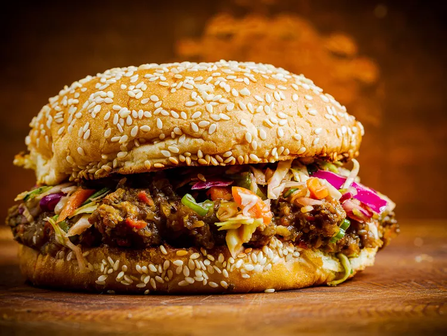

Asian-Inspired Pork and Mushroom Sloppy Joes

Ingredients
Slaw:
- 14 ounces coleslaw mix
- 6 green onions, thinly sliced
- 1/4 cup cilantro leaves, chopped
- 1/4cup seasoned rice vinegar
- 1 1/2 tablespoons seasme oil
- 1 tablespoon sriracha, or more to taste
- 1 1/2 teaspoons soy sauce
- 1 teaspoon blac sesame seeds
Sloppy Joes:
- 1 cup water
- 1/4 cup hoisin sauce
- 1 tablespoon sriracha, or more to taste
- 1 tablespoon fish sauce (optional)
- 2 teaspoons Seasme oil
- 1 pound ground pork
- 1 teaspoon olive oil
- 1 pound crimini mushrooms - cleaned, stems detached, ane broken in half
- 1 yellow onions, cut into chunks
- 1 red bell pepper, seeds and membranes removed, or to taste
- 5 cloves garlic, or more to taste
- 2 tablespoons ginger paste
To assemble
- 3 tablespoons mayonnaise
- 1 tablespoon sesame oil
- 6 sesame hamburger buns, halved
- 1/4 cup cilantro leaves
- sriracha (optional)
Directions:
- Step 1:
Add coleslaw mix, green onions, and cilantro to a bowl. Whisk rice vinegar, 1 1/2 tablespoons sesame oil, 1 tablespoon Sriracha, 1 1/2 teaspoons soy sauce, and 1 85teaspoon sesame seeds together in a cup. Pour dressing over slaw and toss to coat. Set aside to marinate, tossing occasionally, at least 30 minutes.
- Step 2:
Whisk water, hoisin sauce, 1 tablespoon Sriracha, fish sauce, and 2 teaspoons sesame oil together in a large bowl; set aside.
- Step 3:
Heat a 12-inch skillet over medium heat.
Cook and stir pork in the hot skillet with a generous pinch Kosher salt, breaking up pork with a spatula, until browned and crumbly and fat has rendered, 8 to 10 minutes.
Remove pork to the bowl with water-hoisin sauce mixture.
- Step 4:
- Step 5:
- Step 6:
- Step 7:
- Step 8:
- Step 9:
Return to main page